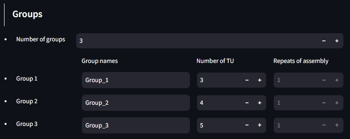
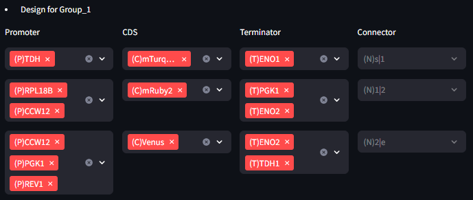
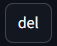
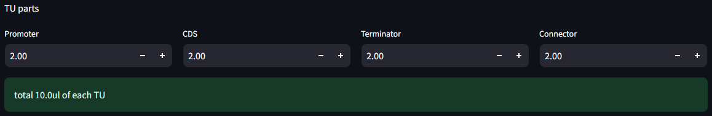
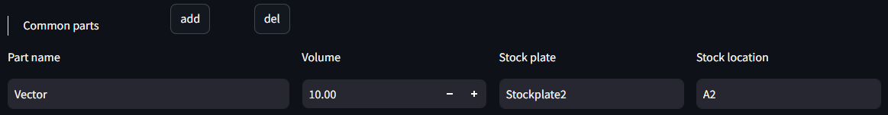

Protogen
Protogen is a Streamlit application for automating liquid handling protocols for Opentrons OT-2 and Janus robotic systems.
It generates protocols for DNA assembly and allows users to intuitively define components, volumes, and well positions.
Features
- Excel-based source plate loading
- Effimodular experimental design
- Automatic OT-2 and Janus protocol/mapping generation
- Required volume and plate feedback
Installation
Protogen is written in Python 3.9.
pip install streamlit pandas opentrons openpyxlUsage
Run the following command:
streamlit run protogen.py1. File Upload (Input File Format)
Protogen uses Excel files (.xlsx) as input. Each sheet contains a table in a 96-well plate format, with the name of the corresponding component recorded in each well.
| 1 | 2 | 3 | … | 12 | |
|---|---|---|---|---|---|
| A | (P)1 | (C)1 | (T)1 | ||
| B | (P)2 | (C)2 | (T)2 | ||
| C | (P)3 | (C)3 | (T)3 | ||
| … | |||||
| H | (P)8 | (C)8 | (T)8 |
- Each well (e.g., A1, B1, C1) contains the names of TU Parts such as Promoter, CDS, and Terminator.
- Unused wells should be left empty.
- Each Part is categorized using a header (P, C, T, N) at the beginning of its name, allowing the system to recognize Part positions automatically.
- Parts with identical names are treated as the same Part.
| Header | Part |
|---|---|
| (P) | Promoter |
| (C) | CDS |
| (T) | Terminator |
| (N) | Connector |
2. Plate and Volume Settings

- Assign a name to each plate from the uploaded file.
- Set a common volume for wells without volume data.
3. Lv1 Design
Groups

This function enables multi-plasmid design. Each group is designed independently.
- Number of groups: Defines the number of groups dividing the Transcription Unit (TU).
- Group names: Assigns names to each group (duplicates may cause errors).
- Number of TU: Specifies the number of TU each group contains.
TU Design

- Defines detailed TU specifications for each group.
- Each TU includes one CDS, and if multiple Promoters or Terminators are specified, all possible combinations are calculated to proceed with Lv2 Design.
- Overlapping Part combinations are excluded.
- Connectors are fixed.
Volume Setting

- Common parts: Defines Parts to be included in all TU.
- Use  and
and

to add or remove Parts.- Part names can be freely assigned, and the specified stock plate and stock location are used to load the corresponding Part.
- If the Part name overlaps with an already loaded stock plate, conflicts may occur.
- Entering the Name and Volume calculates the total required amount based on the number of Lv1 designs.

- TU Parts: Sets the volume for each Part (unit: µL).
- The total volume for each TU is calculated after setting.
4. Lv2 Assembly Design
- Lv2 Volume Setting: Defines the volume per TU and the dead volume for Lv2 assembly.
- Each combination includes the defined volume per TU.

- Each combination includes the defined volume per TU.
- Common Parts: Defines Parts to be included in all TU.
- Use and to add or remove Parts.
- Part names can be freely assigned, and the specified stock plate and stock location are used to load the corresponding Part.
- If the Part name overlaps with an already loaded stock plate, conflicts may occur.
- Entering the Name and Volume calculates the total required amount based on the number of Lv2 designs.
- Use
Calculation Method
Each TU contains one CDS. If multiple Promoters or Terminators are specified, all possible combinations are calculated to generate the Lv2 Design.
- In the given example, 1+2*2+3*2 = 11 TU designs are created.

5. Outputs
- Select OT-2 or Janus: Choose the robotic system to execute.
- Automatic protocol generation: Generates OT-2 or Janus protocols based on selected settings.
- Check outputs: Review final output well positions and used reagents.
- OT-2 Protocol: Python script formatted for execution on Opentrons.
- Janus Protocol: CSV mapping file for Hamilton Janus.
- Updated inventory data: Dataframe with updated volume calculations.
- OT-2 Protocol: Python script formatted for execution on Opentrons.